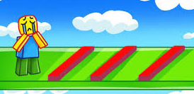
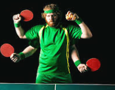
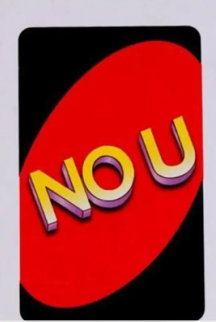
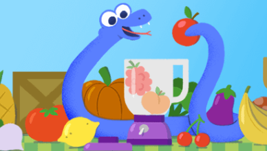
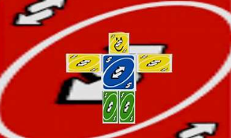

My favorite game is Grow a Garden on Roblox. I know it’s about plants, but it’s actually really fun. You get to plant things, take care of them, and build your own garden with tools and sprinklers. It feels nice watching everything grow. My favorite food is Western food, like burgers, fries, pizza, and all that tasty stuff that makes you full and happy. My favorite drink is just water. It’s kinda plain, not super interesting, but I like it because it’s good for you and I drink it all the time.
| Sleeping | Eating | Healing |
| Working out | Coding for Roblox Studio | Gaming(only on Sunday) |
BURGER
Its a nice alr?, its just juicy, hot, cheesey, the point is it has those stuff. like literally every time when i see mcdonald i will go crazy just to get the triple cheese burger, dont ask me why but i love it
RAMEN
Ramen tastes super yummy! The noodles are soft and chewy, and the soup is warm, salty, and full of flavor. The meat is juicy, and the green onions add a little crunch. It’s so good that I want more from others!
WATER
Water tastes plain but super refreshing. It’s cold, clean, and makes you feel better when you’re really thirsty. Even without any flavor, it feels nice and cool in your mouth.
TEA
Tea tastes warm and cozy with a little bit of flavor, like flowers or leaves. It can be sweet if you add sugar, or a little bitter if it’s plain. When you drink it, it feels calm and relaxing, like a quiet moment in a cup
BADMINTON
Tennis is a fun and fast game where you hit a ball over a net using a racket. You have to run, swing, and think fast to win points. It’s exciting, and every hit feels like a little challenge. Scoring a point feels really awesome. and i did not get the ball hit on my face (its the opposite)
CYCLING
Riding a bike is super fun and makes you feel free. You can go fast, feel the wind, and explore places. It’s good exercise and also exciting, especially when going down a hill. Balancing, pedaling, and turning all make it an adventure!
|  |  | |
|  |  |  |